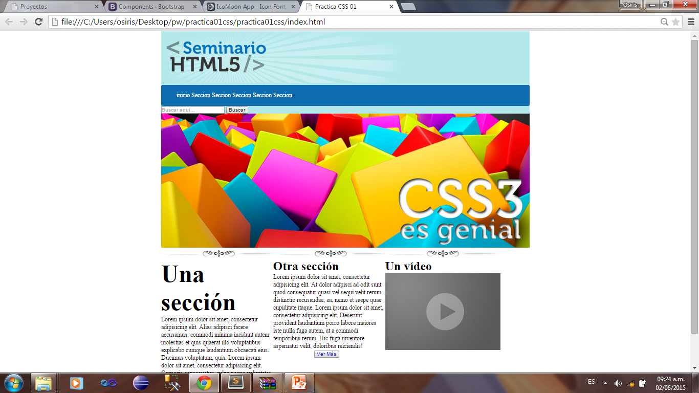
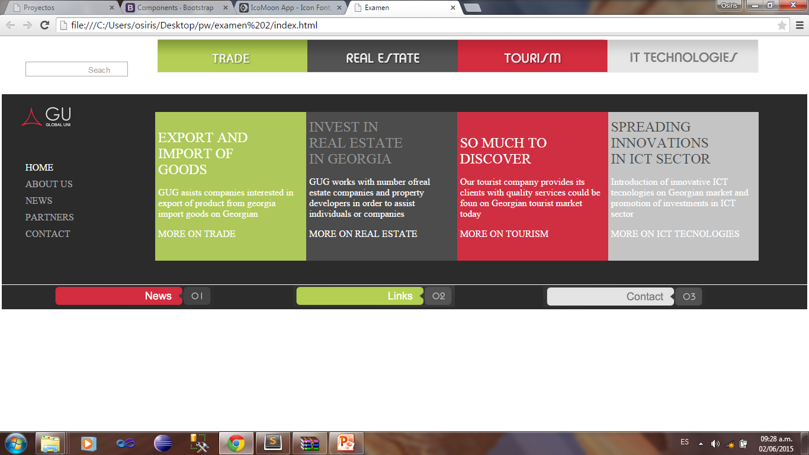
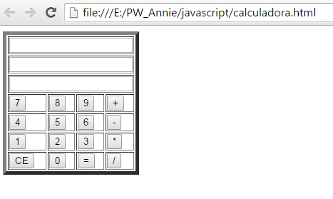

Este es mi portafolio de evidencias de la materia Programacion WEB, desde HTML hasta la utilización de PHP y JAVA SCRIPT.
NOMBRE:
Christian Osiris Gonzalez Rincon
N. CONTROL:
12170605
CARRERA:
Ingenieria en TIC'S
ESCUELA:
Instituto Tecnologico Nacional de Mexico Campus Culiacán
DOMICILIO:
Boulevar Amelos #3145 Col. Los laureles
MAESTRO:
Martin Leonardo Nevarez Rivas
MATERIA:
Programacion WEB
Primera pagina
Esta es mi primera página HTML. Donde utilizamos link hacia la misma página haciendo scroll para abajo y utilizando algunas etiquetas básicas.
Segunda pagina
En esta pagina hicimos link hacia fuera de la pagina hacia la pagina del ITC.
Tercera pagina
En esta pagina utilizamos Tablas.
Cuarta pagina
En esta página hicimos un currículo vitae utilizando tablas.
Primer css
En esta ocasión vimos diseños con CSS dándole color al nav y los botones del menú cambian de color cuando el puntero pasa sobre ellos.
Segundo css
En esta página pusimos un video y un archivo de audio, dándoles una sombra con el CSS.
Tercer css
En este ejemplo utilizamos dos input y componentes del bootstrap.
Practica css
 Esta práctica fue de las primeras donde usábamos CSS nosotros solos, metiendo imágenes, secciones, imágenes, etc...
Practica css
Esta es otra práctica que hicimos en nuestras casas y en esta se utilizaron muchas etiquetas iguales a la práctica anterior lo nuevo en esta es que metimos un footer.
practica css
El ejercicio es igual a los anteriores y estuvimos utilizando html5 y css.
practica css
Esta página la utilice para estudiar antes del examen tomando como base el examen de los que ya habían cursado esta materia el semestre pasado.
Examen css
 Este fue mi examen, realmente fue un fracaso total y lo peor del caso que si sabía lo que estaba haciendo.
Practica JS

En esta práctica realizamos una calculadora utilizando Java Query…
No sé mucho de esta práctica ya que no entre a una clases desde entonces me perdí en el conocimiento de esta herramienta JS.
Practica PHP
Como se habrán dado cuenta esta es la última practica que hicimos, donde utilizamos HTML, CSS, JS, PHP, y MYSQL, metimos un log-in, botones como consulta etc…